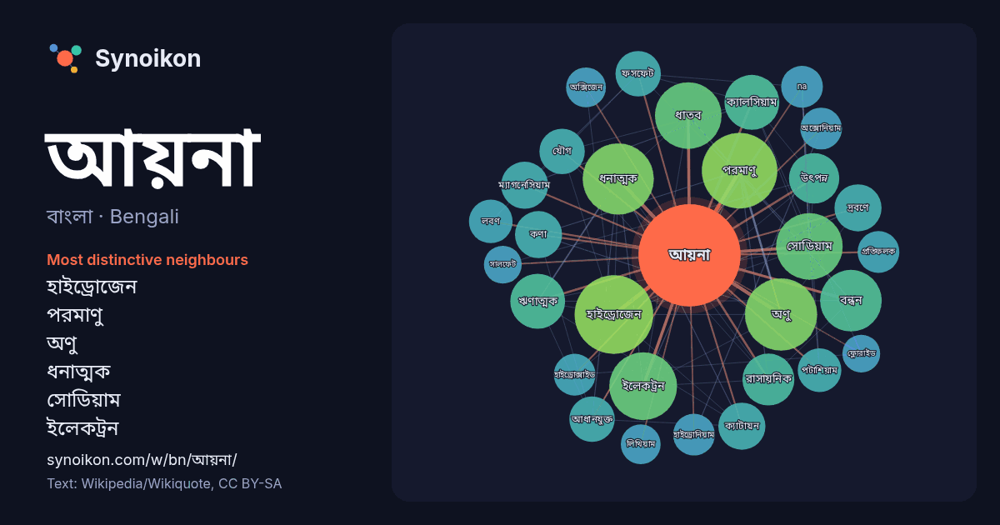

বাংলা · Bengali · word of the day list
আয়না
“mirror” · The words found around it in 928 instances from Bengali Wikipedia, Wikiquote.

Most distinctive neighbours
- হাইড্রোজেন 32×
- পরমাণু 30×
- অণু 29×
- ধনাত্মক 28×
- সোডিয়াম 26×
- ইলেকট্রন 25×
- ধাতব 23×
- বন্ধন 20×
- ঋণাত্মক 18×
- ক্যালসিয়াম 18×
- ক্যাটায়ন 15×
- ম্যাগনেসিয়াম 14×
- দ্রবণে 14×
- আধানযুক্ত 14×
- ফসফেট 13×
- পটাশিয়াম 12×
- কণা 12×
- অক্সোনিয়াম 12×
- হাইড্রোনিয়াম 12×
- যৌগ 12×
× = how many times more often than in general Bengali Wikipedia text.
Most frequent neighbours
- তৈরি 39
- হাইড্রোজেন 39
- পরমাণু 36
- অণু 33
- ধনাত্মক 32
- ইলেকট্রন 29
- ধাতব 28
- সোডিয়াম 28
- গঠন 25
- বন্ধন 24
- ঋণাত্মক 19
- ক্যালসিয়াম 19
- রাসায়নিক 17
- উৎপন্ন 16
- গঠিত 16
- কণা 14
- ক্যাটায়ন 14
- দ্রবণে 14
- ম্যাগনেসিয়াম 14
- আধানযুক্ত 13
In context
- দর্পণের ন্যায় আচরণ করতে পারে। আয়না আবিষ্কারের ইতিহাস সুপ্রাচীন। তবে আধুনিক সময়ে ব্যবহৃত রৌপ্য আর কাচের সংমিশ্রণে তৈরি আয়না ১৮৩৫ সালে আবিষ্কার করেন জার্মান Wikipedia snippets · আয়না
- আয়না মাহমুদ গিজি সুলতানোভা (১৮৯৫-১৯৩৮) ছিলেন আজারবাইজান কমিউনিস্ট পার্টির একজন নারী কর্মী এবং দেশের শীর্ষস্থানীয় রাজনৈতিক নেতা। তিনি প্রথম দিকের আজারবাইজানি Wikipedia snippets · আয়না সুলতানোভা
- আয়ন হলো নিট বৈদ্যুতিক আধানযুক্ত কণিকা, পরমাণু বা অনু। সাধারণত ইলেকট্রনের আধান ঋণাত্মক ধরা হয়। একক আয়নের ঋণাত্মক আধান সাধারণত প্রোটনের ধনাত্মক আধানের Wikipedia snippets · আয়ন
- ধারাবাহিক ছিল শিহাব শাহীন পরিচালিত রমিজের আয়না। অভিনেত্রী লারা লোটাসও ধারাবাহিকটিতে অভিনয় করেন। রমিজের আয়না রচনা ও পরিচালনা করেন শিহাব শাহীন। ধারাবাহিকটিতে Wikipedia snippets · রমিজের আয়না
- অপ্রচলিত হয়ে পড়েছে। মাথার আয়না বেশিরভাগই কান, নাক এবং গলা পরীক্ষা করার জন্য ব্যবহৃত হয়। এটি একটি বৃত্তাকার অবতল আয়না নিয়ে গঠিত, যার মাঝখানে একটি Wikipedia snippets · মাথার আয়না
- আয়না এস এম ইউসুফ পরিচালিত ১৯৪৪ সালের ভারতীয় হিন্দি ভাষার চলচ্চিত্র। এতে শ্রেষ্ঠাংশে অভিনয় করেছেন ত্রিলোক কাপুর, কৌশল্যা, ইয়াকুব, হুসন বানু, ও সুলোচনা Wikipedia snippets · আয়না (১৯৪৪-এর চলচ্চিত্র)
- (সাহায্য); অজানা প্যারামিটার |আইএসবিএন-ত্রুটি-উপেক্ষা-করুন= উপেক্ষা করা হয়েছে (সাহায্য) ইন্টারনেট মুভি ডেটাবেজে আয়না (ইংরেজি) বাংলা মুভি ডেটাবেজে আয়না Wikipedia snippets · আয়না (২০০৬-এর চলচ্চিত্র)
- আয়না হল কাচ দিয়ে তৈরি মসৃণ তল বিশিষ্ট দর্পন। আয়না - ১৯৪৪ সালের ভারতীয় হিন্দি চলচ্চিত্র। আয়না - ২০০৬ সালের বাংলাদেশী চলচ্চিত্র। এটি একটি দ্ব্যর্থতা Wikipedia snippets · আয়না (দ্ব্যর্থতা নিরসন)
More Bengali words
- অরণ্য
- ইতিহাস
- ঈশ্বর
- কাজ
- কুকুর
- ক্ষমতা
- খাদ্য
- গান
- গ্রীষ্ম
- ঘড়ি
- ঘণ্টা
- ঘোড়া
- ছায়া
- জননী
- জলবায়ু
- জীবন
- ঝড়
- টাকা
- ট্রেন
- দারুচিনি
- দ্বীপ
- নক্ষত্র
- নীরবতা
- পরিবার
- পানি
- পাহাড়
- প্রকৃতি
- বাগান
- বিজ্ঞান
- বিড়াল
- বৃষ্টি
- ভাষা
- মধু
- মরুভূমি
- মানচিত্র
- মৃত্যু
- রাস্তা
- রুটি
- লবণ
- শরৎ
- শহর
- শিল্প
- শীত
- সত্য
- সময়
- সেতু
- সোনা
- স্বাস্থ্য
- হৃদয়
Precomputed on 2026-10-09 with default settings (±5 words, medium corpus). The interactive map can refresh it with live data.